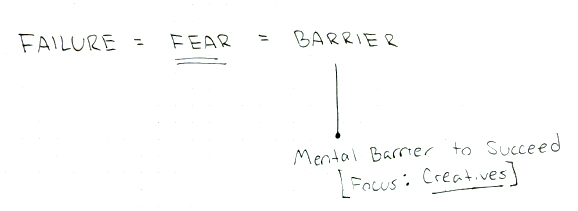

Research
I’ve spent the last few days reading the growing mound of books that I’ve been buying and checking out from the library that pertains to my topic of interest. The two books that have had my full attention are “Creative Confidence,” by Tom + David Kelley, and “Fail Better: Design Smart Mistakes and Succeed Sooner,” by Anjali Sastry + Kara Penn. I’ve been pening a lot of consideration and mind mapping on where I believe I’m heading with this study, and what my purpose is through it.
I’ve determined that my target audience are designers and creative folk who are struggling with finding confidence following a failure. My first step is to gather feedback and stories from others on my current area of study: fear as a barrier in the creative process. But, having sent out simple survey monkey quizzes before, I know that in order to provoke and gather the level of reflection that I’m look- ing for, I’ll need to get a little more creative with how I present the questions.
Because I also want this project to serve as a vessel to experiment with increasingly popular areas of design, I’m trying something that I’m definitely not ready for. Yesterday I started coding a website to host my questions, using a form submit to gather my stories. Sounds like a simple task for a web designer. But since I’ve barely touched JavaScript, and we’ve had 3 snow days already in place of my Advanced Web class with Pascal, the challenge is on. I might be wasting my efforts trying to learn a new skill instead of just using a simpler approach to collect my data, but I find learning this shit exciting so I’m going to keep trying for at least another day or two. With that, creating a website link makes my questions more accessible to people outside of the MassArt community, and I believe that the simple and clear design would encourage more people to take the time to submit a thoughtful story. So a single serving website vs. a static survey = catering to my audience of ambitious desi- gners. I think.
PROGRESS REPORT 2
February 21th, 2015
After a dense few weeks in panic mode—which included some fresh brainstorm waves, overwhelmed tangents, and a couple of weak moments of wanting to switch my area of research—I finally am feeling some resolution to where I want this project to head. And fortunately, it doesn’t including scrapping any of my progress so far.
The theme that these questions all root to is fear. But fearfulness in the creative process is an ongoing dialogue. I don’t believe that the questions I'm asking are ones that I could hope to answer in any project that has an end date. Which got me thinking about the prospect of initiating a conversation on this matter.
In fact, when placing my own process into consideration, I build on my own methods by seeking inspiration from other creatives. I fuel my curiosity in the industry by looking at admirable people and listening to their stories, whether that be of success or struggle.
The first publication to really grasp my attention has been Intern magazine, from the U.K. Their entire magazine is about the debate of the role of internships, whether they are paid or unpaid. What draws me to following their publication is the extent of voices they feature, and their open encouragement for any creative to join the conversation that they started.
This is where I’ve landed: to create a platform, whether it becomes a publication in print or strictly digital, that drives a conversation with the intent of transcending the role of fear in the creative process. It’ll be a “self aware" publication containing curated contributions around the theme of fear: What it’s done for you, where it’s stopped you, what you want to overcome, or anything you want to say on the matter.
(FIller filler) This is where I’ve landed: to create a platform, whether it becomes a publication in print or strictly digital, that drives a conversation with the intent of transcending the role of fear in the creative process. It’ll be a “self aware" publication containing curated contributions around the theme of fear: What it’s done for you, where it’s stopped you, what you want to overcome, or anything you want to say on the matter.
(FIller filler) This is where I’ve landed: to create a platform, whether it becomes a publication in print or strictly digital, that drives a conversation with the intent of transcending the role of fear in the creative process. It’ll be a “self aware" publication containing curated contributions around the theme of fear: What it’s done for you, where it’s stopped you, what you want to overcome, or anything you want to say on the matter.


© 2015 Beth Chappell
- Terms and Conditions
- Privacy Policy